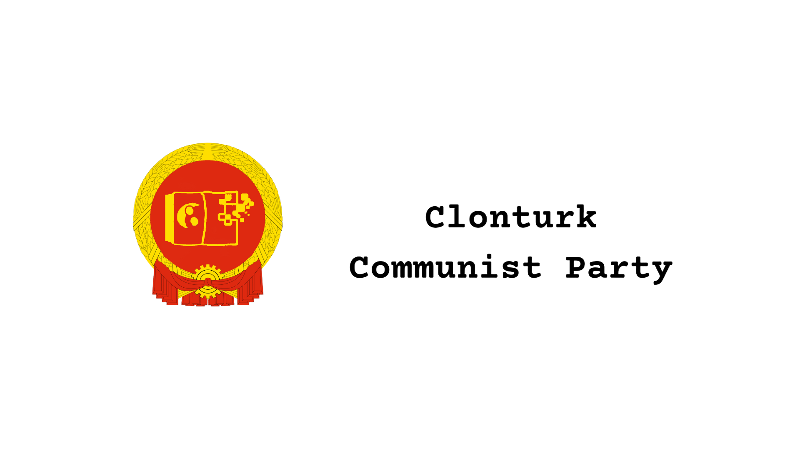

Welcome, Communists.
We are the Clonturk Communist Party. We are a political party of second years focused on bringing Communism to Clonturk. We believe that every student should be treated according to their needs and abilities, and we wish to see every student succeed. We hope that we can bring change to this school through compassion, ambition, and of course, propaganda. If this sounds like something you might be interested in, see the Get Involved page to learn more.
The Clonturk Communist Party was founded on the 28th of February 2024, when Joshua Halpin had an idea to change Clonturk for the better. Since then, it has grown to include over 2 members, striving to make a difference in the school we all know and love. One of our secondary missions is to spread awareness about Communism, what it means, and how you can make a difference. If you are curious about our Student Council Election Campaign, visit our About Page.